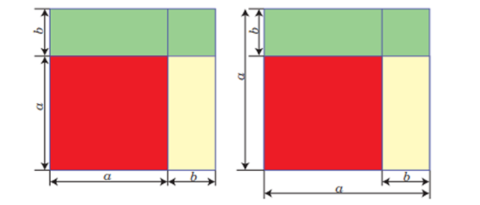
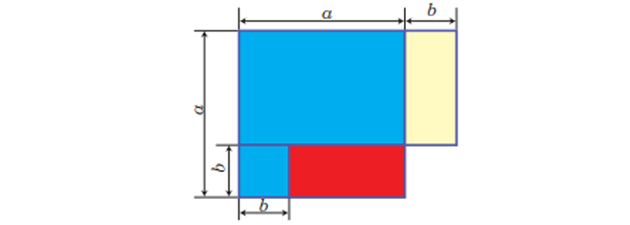

Iki aňlatmanyň jeminiň kwadraty
(a + b)2 = a2 + 2ab + b2.
Iki aňlatmanyň jeminiň kwadraty birinji aňlatmanyň
kwadratyna, plýus birinji we ikinji aňlatmalaryň köSpeltmek hasylynyň iki essesine, plýus ikinji aňlatmanyň
kwadratyna deňdir.
Iki aňlatmanyň tapawudynyň kwadraty
(a - b)2 = a2 - 2ab + b2.
Iki aňlatmanyň tapawudynyň kwadraty birinji aňlatmanyň kwadratyna, minus birinji we ikinji aňlatmalaryň köpeltmek hasylynyň iki essesine, plýus ikinji aňlatmanyň
kwadratyna deňdir.
Iki aňlatmanyň jeminiň we tapawudynyň kwadratlarynyň geometriki düşündirilişi

Iki aňlatmanyň tapawudyny olaryň jemine köpeltmek
(a - b)(a - b) = a2 - 2ab + b2.
Iki aňlatmanyň tapawudynyň olaryň jemine köpeltmek hasyly, şol aňlatmalaryň kwadratlarynyň tapawudyna deňdir.
Iki aňlatmanyň tapawudyny olaryň jemine köpeltmegiň geometriki düşündirilişi

Formulanyň dogrulygyna suratda şekillendirilen gönüburçluklaryň we kwadratlaryň meýdanlaryny deňeşdirip hem göz ýetirmek bolýar.
Kwadratlaryň tapawudyny köpeldijilere dagatmak
a2 – b2 = (a – b)(a + b)
Iki aňlatmanyň kwadratlarynyň tapawudy şol aňlatmalaryň tapawudynyň jemine köpeltmek hasylyna deňdir.
Iki aňlatmanyň kublarynyň jemi we tapawudy
a3 + b3 = (a + b)(a2 – ab + b2)
a3 – b3 = (a – b)(a2 + ab + b2)
Şeýlelikde, iki aňlatmanyň kublarynyň jemi (tapawudy) şol aňlatmalaryň jeminiň (tapawudynyň) olaryň tapawudynyň (jeminiň) doly däl kwadratyna köpeldilmegine
deňdir.
Iki aňlatmanyň jeminiň kuby
(a + b)3 = a3 + 3a2b + 3ab2 + b3.
Iki aňlatmanyň jeminiň kuby birinji aňlatmanyň kubuna, plýus birinji aňlatmanyň kwadratynyň ikinji aňlatma köpeltmek hasylynyň üç essesine, plýus birinji aň lat
manyň ikinji aňlatma nyň kwadratyna köpeltmek hasylynyň üç essesine, plýus ikinji aňlatmanyň kubuna deňdir.
Iki aňlatmanyň tapawudynyň kuby
(a - b)3 = a3 - 3a2b + 3ab2 - b3.
Iki aňlatmanyň tapawudynyň kuby birinji aňlatmanyň kubuna, minus birinji aňlatmanyň kwadratynyň ikinji aňlatma köpeltmek hasylynyň üç essesine, plýus birinji aňlatmanyň ikinji aňlatmanyň kwadratyna köpeltmek hasylynyň üç essesine, minus ikinji aňlatmanyň kubuna deňdir.